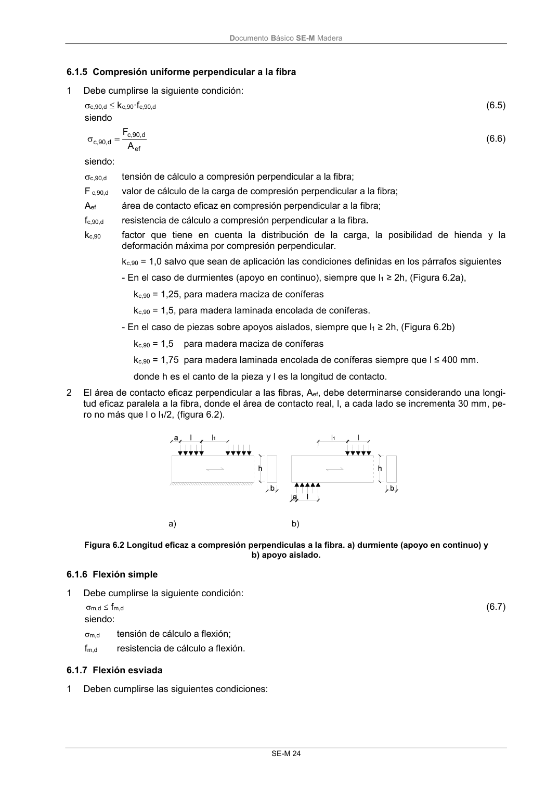

DB-SE-M Madera · edición 2019-12-20 · capa oficial
Documento DB-SE-M-oficial · SHA-256 del PDF 26b5819839ebfda78b0b119c5e76a0a37773b0d763c05688541870075df93718
Copia fiel del PDF fuente · Fuente oficial
Ficha de la disposición en la fuente oficial
Formatos: JSON del segmento · Markdown
6.1.5 Compresión uniforme perpendicular a la fibra 1 Debe cumplirse la siguiente condición: c,90,d kc,90·fc,90,d (6.5) siendo ef d , 90 ,c d , 90 ,c A F (6.6) siendo: c,90,d tensión de cálculo a compresión perpendicular a la fibra; F c,90,d valor de cálculo de la carga de compresión perpendicular a la fibra; Aef área de contacto eficaz en compresión perpendicular a la fibra; fc,90,d resistenciade cálculo a compresión perpendicular a la fibra. kc,90 factor que tiene en cuenta la distribución de la carga, la posibilidad de hienda y la deformación máxima por compresión perpendicular. kc,90 = 1,0 salvo que sean de aplicación las condiciones definidas en los párrafos siguientes - En el caso de durmientes (apoyo en continuo), siempre que l1 ≥ 2h, (Figura 6.2a), kc,90 = 1,25, para madera maciza de coníferas kc,90 = 1,5, para madera laminada encolada de coníferas. - En el caso de piezas sobre apoyos aislados, siempre que l1 ≥ 2h, (Figura 6.2b) kc,90 = 1,5 para madera maciza de coníferas kc,90 = 1,75 para madera laminada encolada de coníferas siempre que l ≤ 400 mm. donde h es el canto de la pieza y l es la longitud de contacto. 2 El área de contacto eficaz perpendicular a las fibras, Aef, debe determinarse considerando una longi- tud eficaz paralela a la fibra, donde el área de contacto real, l, a cada lado se incrementa 30 mm, pe- ro no más que l o l1/2, (figura 6.2). a) b) Figura 6.2 Longitud eficaz a compresión perpendiculas a la fibra. a) durmiente (apoyo en continuo) y b) apoyo aislado.
